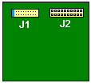

This procedure describes how to remove the incubator pick-and-place module.
Perform this procedure when:
service access to the incubator pick-and-place is insufficient.
it is necessary to gain access to another module.
Prepare the instrument.
Remove the center gray rear cover, and place it in a location where it is safe from damage.
Remove the upper rear cover, and place it in a location where it is safe from damage.
Open the upper left and right front covers.
Remove power from the motors by using the switch on the Power Distribution PCB labeled "All DC power (except CPU and reagent coolers)".
Remove the incubator pick-and-place.
Remove the connectors from the incubator pick-and-place interface PCB.
J1 - Ribbon Cable
J2 - Incubator P&P Motor
Remove the air line from the incubator pick-and-place air valve.
Note: Push in on the locking ring and pull out on the tube to remove it from the incubator pick-and-place air valve.
Manually move the pick-and-place carriage to the far right, with the z-carriage to a location that is one inch below its full upward position.
Remove the four screws attaching the carriage interface PCB bracket to the instrument.
Remove these connectors from the carriage interface PCB:

J1 - Ribbon Cable
J2 - Carriage Motor
Carefully remove the carriage wire connectors from the cable keepers on the back side of the incubator pick-and-place and allow the carriage interface PCB and bracket to hang, supported by the carriage sensor and power cables.
Remove the gantry using one of two options: remove the gantry only or remove the gantry and the mounting towers.
Caution: It is recommended not to remove the towers (if at all possible) from the base plate, as this makes it much more difficult to adjust/align the module after installing. If replacing a pick-and-place, then remove the new gantry from the towers and install it on the mounting towers currently in place.
If removing the gantry and the mounting towers (not recommended),
mark the locations of the towers on the instrument base plate using a sharp object or pen
remove the four screws holding each tower to the instrument base plate
remove the gantry from the instrument with the towers still attached (procedure complete).
If replacing a pick-and-place (remove gantry only),
Loosen the two captive screws holding the gantry to the towers.
Firmly grasp the main bracket assembly with both hands and wiggle it forward off the two locator pins.
Caution: Use care in handling the module. Avoid grasping the assembly by the guide rods or any other fragile area.
Once the assembly is off the locator pins, lift it upward and 'roll' the top toward the rear of the instrument until it is out.
Caution: Do not force the module. There is sufficient clearance for removing it.
Place the incubator pick-and-place on a clean work area with its PCB side upward.